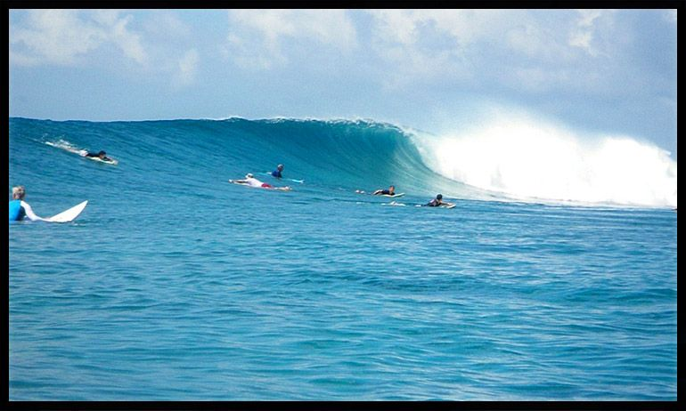
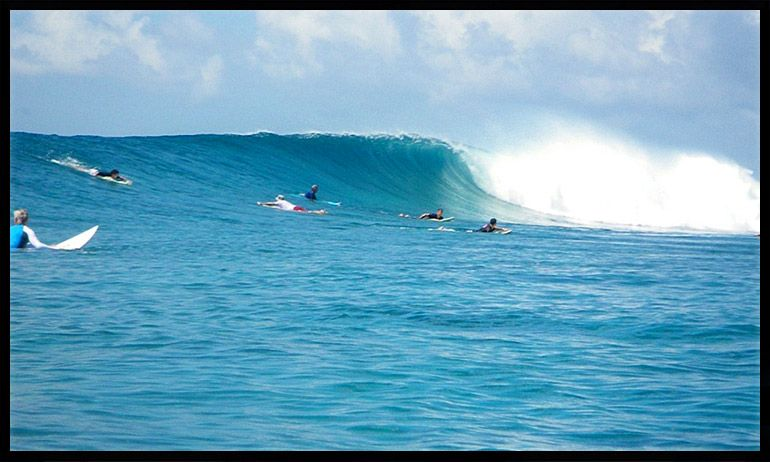
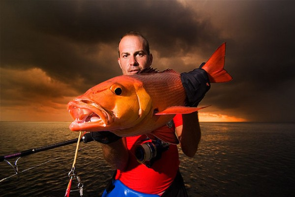
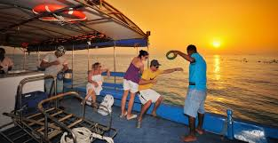
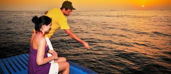
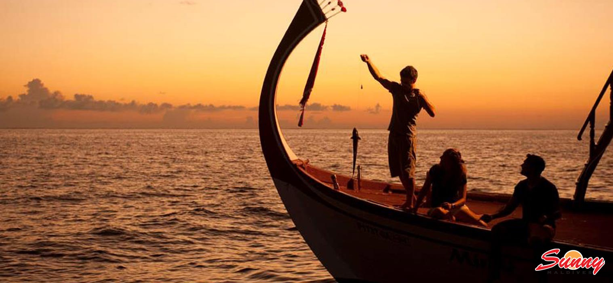

Fila Hotels & Resorts |
||
Surfing 



What the expert saysDarren Burrett is the founder of Surf South West, the first surf school in the UK to be awarded level four status by the British Surfing Association (BSA). He has 26 years' experience and has surfed in more than 20 countries.Keep in trimEvery board has a sweet spot, where it is stable and balanced and will move 'in trim' with the wave. If you're too far forward, the nose will sink, too far back and it will stall. When you are centred, the nose of the board will sit just above the surface of the water.Catch a waveStart paddling for a wave way in advance, to build up enough momentum for it to take you. When you feel it pick you up, the natural instinct is to grip the board and attempt to get up, but this is when you should put in a final two to three powerful arm strokes. Spend plenty of time practising this without trying to stand up.Master the pop-upThe holy grail of surfing is to get from a prone position to standing in one clean motion. You need to jump to your feet and turn them simultaneously so that they are at a right angle to the board.Perfect your paddlingPaddling - whether to get out through the waves or to catch a wave - is a key skill. The action is similar to front crawl but you need to keep your body as still as possible, just using the shoulders and arms to pull rather than twisting the body or head. Keep your feet slightly apart to aid stability.Night Fishing




In typical daylight fishing, anglers are accustomed to seeing what they’re doing and watching the line or the lure, but this is seldom possible at night. You can use black lights that make it possible to watch fluorescent lines very well, but although this was a popular monofilament line several decades ago, few anglers use this type of line, today. For the most part, intuition and a feel for your tackle become more important at night than in the daylight. This makes it advantageous to use a sensitive rod and line, and not to try fishing with ultralight tackle. Obviously, your vision is better on nights with moonlight than on dark or overcast nights, and there can be much debate over whether bright nights are better for fishing than dark nights. Keeping the use of external-source lights to a minimum is a good idea for some types of fishing, though it is unnecessary for others. It is also well known that locations prone to receiving light (docks, piers, bridges, etc.) may attract small fish and thus larger predators, although this is more likely the case in saltwater than in freshwater. Even if you have great intuition and a natural feel for your tackle, a small headlamp is a proper accessory for night fishing, since it frees both hands and issues only a small amount of light. Better ones are those with red and/or green color options, which are not as alarming to fish if you happen to turn toward the water. |
||
| © 2018 Fila Hotels & Resorts | ||